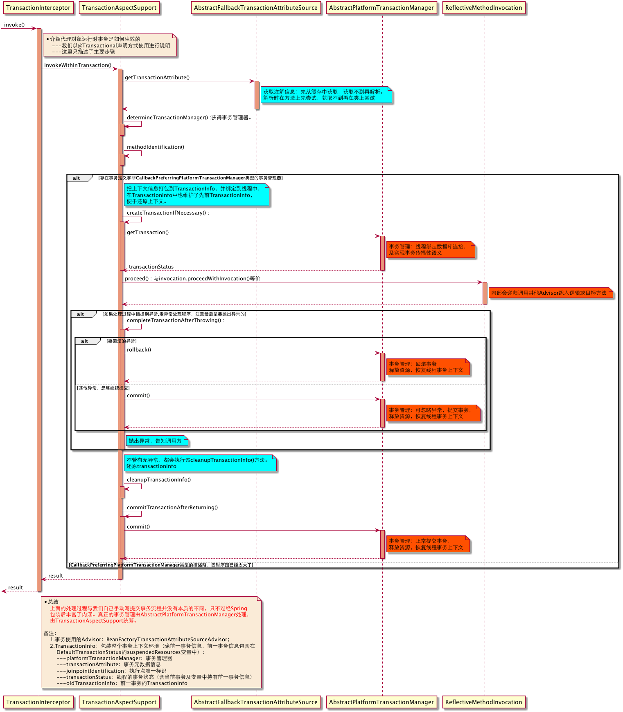
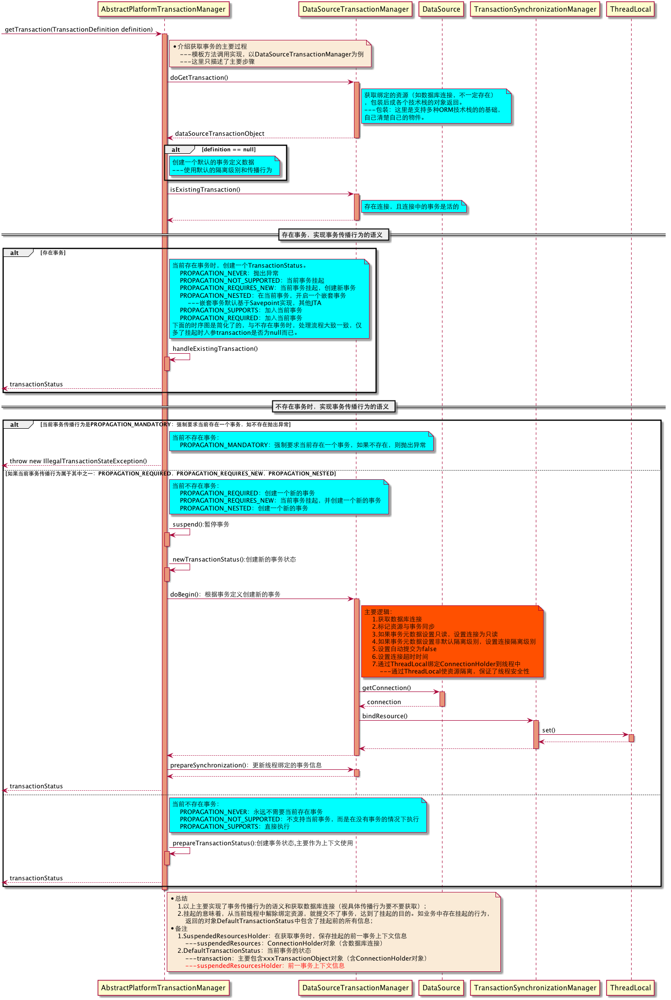
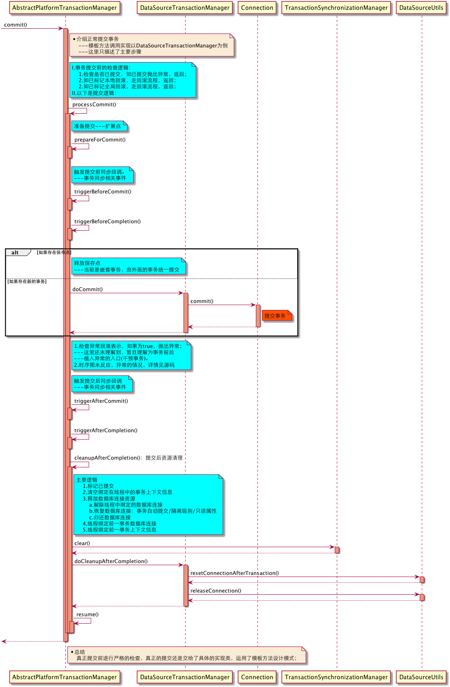
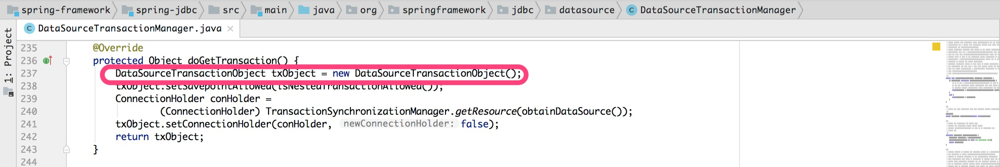
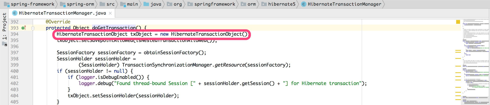
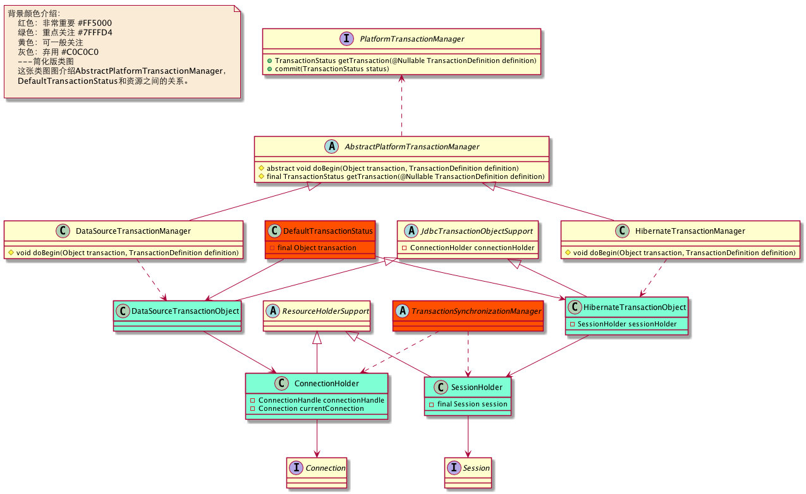
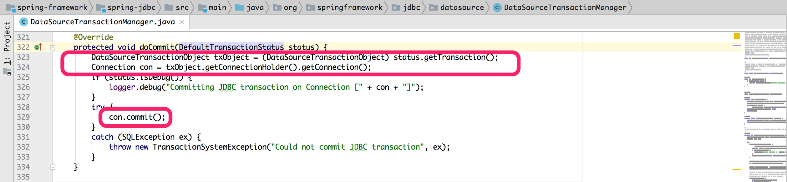
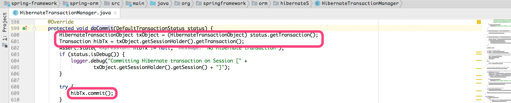

Spring事务管理原理
Spring事务管理的实现可以分为两个部分来讲：
- 借力AOP：如何通过AOP使事务管理生效；
- 事务管理：事务管理的本质是什么；
因为我们要搞懂以上两点，所以这篇博客要比其他章节长很多，望大家不要介意。
一.借力AOP
1.织入代理对象
织入动态代理对象中，其实是意味着加入到代理对象中的Advisor数组即可。通过xml中声明或注解方式使用Spring事务管理后，Spring会帮我们注册事务使用的Advisor：BeanFactoryTransactionAttributeSourceAdvisor。我们先看看Spring是如何判定BeanFactoryTransactionAttributeSourceAdvisor是否需要织入Bean。
提示：
BeanFactoryTransactionAttributeSourceAdvisor中包含的切点是
TransactionAttributeSourcePointcut。而TransactionAttributeSourcePointcut
包含classFilter设置的是ClassFilter.TRUE，也就是说，真正发挥匹配
作用的是MethodMatcher。
这里只画出了TransactionAttributeSourcePointcut主要逻辑，全流程参代理生成中如何查找Bean适用的Advisor，时序图如下：
{kind=link}
我们再看看BeanFactoryTransactionAttributeSourceAdvisor长什么样，其中里面包含AOP的上下文和事务管理的组件。大家暂且仅把它当做一个普通的Advisor就好。
{kind=link}
2.交接事务管理
环绕通知TransactionInterceptor这个类作为AOP切入事务管理的入口，TransactionInterceptor.invoke()方法获得执行时，又转交给了TransactionAspectSupport。到这里AOP在引导事务的职责就完成了，后续就是事务框架内部执行（内部会递归调用其他Advisor织入逻辑或目标方法）。
下图是“AOP框架”与“事务框架”的交接点：
{kind=link}
二.事务管理
事务管理的本质是管理Connection事务提交行为。Spring事务框架设计理念基本原则：让事务管理关注点与数据访问管理点相分离。Spring事务管理原理：通过AOP切入业务逻辑中，在业务代码执行前，设置开启事务，业务处理处理完成，提交事务（回滚也看成提交的一种）。提示：
事务管理不涉及数据查询，具体数据访问由第三方ORM框架，如Mybatis来实现，
不作为这里讨论的重点，我们只需给第三方提供好事务上下文环境就好,如提供已设
置事务属性的数据库连接。
Spring事务管理主要职责：
- 开启事务，并支持事务传播行为
- 资源(如数据库连接)线程安全性
- 事务的提交：(a).正常事务提交；(b).遇到异常的处理：即支持回滚，也支持提交事务
- 支持不同的ORM框架使用Spring事务管理的特性
在TransactionAspectSupport中通过PlatformTransactionManager实现类来进行事务的管理。当使用MyBatis时，是DataSourceTransactionManager。下图是事务处理的全局时序图：
{kind=link}

事务管理中涉及很多点，我们一个个来探个究竟，先看第一个开启事务时看Spring做了什么。
1.开启事务
开始事务是Spring事务管理的重点：实现了事务传播行为的语义；正确设置事务属性的数据库连接；绑定到ThreadLocal中，方便线程上下文使用。时序图如下：
{kind=link}

Spring事务管理时，把前一事务信息当做变量来维护，还原时直接拷贝，属于另一种智慧（Prototype设计模式）。
2. 线程安全
Spring通过TransactionSynchronizationManagers使用ThreadLocal，把资源绑定到当前线程中，使资源隔离，保证了线程安全性。我们以MyBatis使用为例，一探究竟：
Mybatis获取数据库连接时序图如下：
{kind=link}
3.事务提交
3.1 正常提交
正常提交事务时序图如下：
{kind=link}

3.2 回滚事务
回滚事务时序图如下：
{kind=link}
4.支持不同ORM
接下来我们看看Spring是如何整合不同ORM的，这里也分两部分来讲：
- Spring框架内整合各种ORM技术，消除技术栈的阻抗；
- 提供给第三方ORM框架的支持工具类，作为接入事务管理的入口；
4.1 Spring框架内整合各种ORM技术
首先，Spring定义顶层事务管理接口：PlatformTransactionManager，在抽象类AbstractPlatformTransactionManager中通过模板方法定义主流程，然后为每个ORM框架提供实现类。应用中需要使用Spring事务时，以Bean的方式注册相应PlatformTransactionManager实现类在Spring容器。
{kind=link}
我们再看不同PlatformTransactionManager之间有什么异同。我们通过getTransaction()获取事务，具体实现内部再由doGetTransaction()与doBegin()开启事务。在开启事务时，因为每种技术栈用的事务管理数据模型不同，比如Mybatis用Connection，Hibernate用Session，所以需要各自去实现事务管理。第三方ORM开启事务后，事务管理数据模型打包到相应xxxTransactionObject（通过ThreadLocal，具体的资源同时也维护在线程中），最后再把xxxTransactionObject打包到DefaultTransactionStatus.transaction变量中返回给调用方。一句话：通过万能的Object类型的transaction持有不同事务管理数据模型。
{kind=link}

{kind=link}

不同ORM框架事务管理数据模型类图，可以看到一种对称的美：
{kind=link}

在通过commit()提交事务时，具体实现内部调用doCommit()方法完成事务提交。doCommit()方法也是交给具体的PlatformTransactionManager实现类来提交事务。具体实现类使用使做强制类型转换，再进行具体的事务提交即可。
{kind=link}

{kind=link}

4.2提供给第三方ORM框架支持工具
这里我们以Mybatis为例，其他ORM框架有对应的工具类。在介绍线程安全时，我们看到Mybatis通过DataSourceUtils获取数据库连接。DataSourceUtils再通过TransactionSynchronizationManager获取当前线程绑定的数据库连接（连接的事务已被Spring管理）。这样Mybatis框架就轻易接入了Spring事务管理，只需要专注于数据映射相关操作。
以上就是Spring事务管理实质，除了事务管理，Spring在数据层访问时，还帮我们规范设计了一套数据访问异常体系，里面也有不少亮点，单独一篇博客来说明（这篇实在太长了），那我们去看看：统一的数据访问异常体系。
备注：
- Prototype设计模式：原型模式，简单理解就是拷贝，不关心怎么来的。
快速导航：